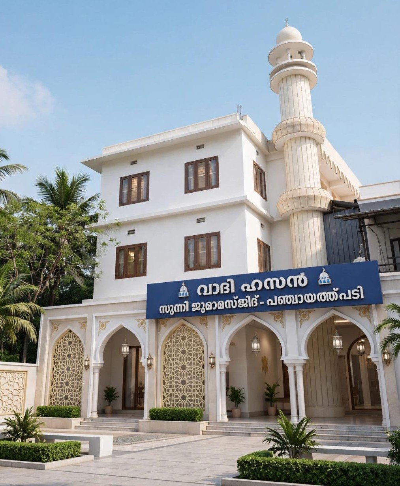
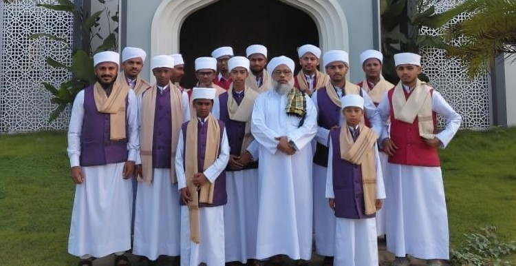

മേൽമുറി ഗ്രാമത്തിന്റെ ദീനി പാരമ്പര്യം
അഹ്ലുസ്സുന്നയുടെ ആശയ വഴിയിൽ സാദാത്തുകളുടെയും പണ്ഡിതരുടെയും ഉപദേശങ്ങൾ സവിനയം സ്വീകരിച്ച് ദീനി രംഗത്ത് ശോഭിച്ചു നിന്ന ചരിത്രമാണ് മേൽമുറി ഗ്രാമത്തിന്റേത്.
تعمل أكاديمية السعادة على تنشئة جيلٍ واعٍ ومسؤول أخلاقياً، والنهوض بالفقراء والمحتاجين من خلال توفير التعليم العالي والدعم المجتمعي عبر منظومتها التعليمية والإنسانية المتكاملة.
അഹ്ലുസ്സുന്നയുടെ ആശയ വഴിയിൽ സാദാത്തുകളുടെയും പണ്ഡിതരുടെയും ഉപദേശങ്ങൾ സവിനയം സ്വീകരിച്ച് ദീനി രംഗത്ത് ശോഭിച്ചു നിന്ന ചരിത്രമാണ് മേൽമുറി ഗ്രാമത്തിന്റേത്.
1970കളിൽ എസ് വൈ എസും 1980 ഓടെ എസ് എസ് എഫിന്റെ പ്രവർത്തനവും മേൽമുറിയിൽ സജീവമാവുകയും ഇല്ലായ്മയുടെ തിരിച്ചയിലും പ്രതിസന്ധികളെ തരണം ചെയ്ത് പ്രസ്ഥാനം മുന്നേറി. സുന്നി പ്രവർത്തകരുടെ അഭിലാഷ സാക്ഷാത്കാരമായി പഞ്ചായത്ത് പടിയിൽ മസ്ജിദ് സൗകര്യത്തോടെ സുന്നികൾച്ചൽ സെന്ററിന്റെ പ്രവർത്തനങ്ങൾക്ക് തുടക്കം കുറിക്കുകയും ചെയ്തു. ആത്മീയോന്നതി ലക്ഷ്യം വെച്ച് നിരവധി ആത്മീയ മജ്ലിസുകൾ, പഠന ക്ലാസുകൾ, സാന്ത്വന സാംസ്കാരിക പ്രവർത്തനങ്ങൾ കേന്ദ്രീകരിക്കാൻ സംഘടനക്ക് സാധിച്ചു. ഇർഷാദിയ്യക്ക് കീഴിൽ മസ്ജിദ് സ്ഥാപിക്കുകയും സുൽത്താനുൽ ഉലമ ശൈഖുനാ കാന്തപുരം എ പി അബൂബക്കർ മുസ്ലിയാരുടെ നേതൃത്വത്തിൽ മസ്ജിദ് നാടിന് സമർപ്പിച്ചു. മസ്ജിദ് ബഹുനിലകളായി വികസിപ്പിക്കാനും നിരവധി വിദ്യാർത്ഥികൾക്ക് ഇസ് ലാമിക ശരീഅത്ത് പഠനത്തിന് വേദി ഒരുക്കാനും സാധിച്ചു.
2016ൽ സാദുനഗർ പിറവി കൊള്ളുകയും ബദറുസ്സാദാത്ത് സയ്യിദ് ഇബ്രാഹീമുൽ ഖലീലുൽ ബുഖാരി തുടക്കം കുറിച്ച് സയ്യിദ് ശഹീറുദ്ദീൻ അൽ ബുഖാരി ഷീമാഗ തങ്ങളുടെ നേതൃത്വത്തിൽ സ്വലാത്തുസ്സുഅദ മജ്ലിസ്സാദു നഗറിൽ നടന്നുവരുന്നു. സുന്നി പ്രവർത്തകരുടെ മനസ്സിലെ വലിയ ആശയമായിരുന്നു നാട്ടിലൊരു സുന്നി മദ്റസ എന്നത്. 2019 ൽ മദ്റസത്തുസ്സുഅദ പ്രവർത്തനം ആരംഭിക്കുകയും ബഹുനില കെട്ടിടം നിർമ്മിച്ച് നൂറിലധികം കുട്ടികൾക്ക് പഠനമൊരുക്കാൻ സാധിക്കുകയും ചെയ്തു.
കേരള മുസ്ലിം ജമാഅത്തിന്റെ മേൽമുറി യൂണിറ്റ് സ്തുത്യർഹമായ നിലയിൽ പ്രവർത്തിച്ചു കൊണ്ടിരിക്കുന്നു. നിരവധി നല്ല പ്രവർത്തനങ്ങൾ സംഘടന ഇതിനകം കാഴ്ച വെച്ചിട്ടുണ്ട്. മഹല്ലിലെ ദീനി സംരംഭങ്ങളിലും മത ഭൗതിക വിദ്യാഭ്യാസ മേഖലയിലും, ജീവകാരുണ്യ രംഗത്തും കേരള മുസ്ലിം ജമാഅത്ത് നിറ സാന്നിധ്യമാണ്. വാദിഹസൻ സുന്നി ജുമാ മസ്ജിദും സുഅദ അക്കാദമിയും കേരള മുസ്ലിം ജമാഅത്തിന്റെ നേതൃത്വത്തിൽ മേൽമുറിയിലെ പ്രസ്ഥാന കുടുംബം നടത്തിയ പ്രവർത്തന ങ്ങളുടെ ഫലമാണ്. സമസ്ത കേരള സുന്നി യുവജന സംഘം (SYS) സംഘടന മേൽ മുറിയുടെ ധാർമ്മിക മുന്നേറ്റത്തിൽ നിസ്തുല മായ പങ്ക് വഹിച്ചിട്ടുണ്ട് ജീവകാരുണ്യ സാന്ത്വന പ്രവർത്തനങ്ങൾ, മതപഠന ക്ലാസുകൾ, ഖുർആൻ പഠന ക്ലാസുകൾ, മാസാന്ത്യ ഖുത്ബിയ്യത്ത്, മൗലിദ്, ബുർദ മജ്ലിസുകൾ തുടങ്ങിയ നിരവധി പ്രവർത്തനങ്ങൾക്ക് സംഘടന നേതൃത്വം നൽകുന്നു. യുവ തലമുറയെ ധാർമ്മികമായി മുന്നോട്ട് നയിക്കാനും ആശ്വാസ പ്രവർത്തനങ്ങൾ ചെയ്ത് മേൽമുറി മഹല്ലിനെ സംസ്കരിച്ചെടുക്കാൻ എസ് വൈ എസ് ശ്രമിച്ചുകൊണ്ടിരിക്കുന്നു.
വഴിതെറ്റുന്ന കാമാര വിദ്യാർത്ഥികളെ ധാർമ്മികമായി സമുദായരിക്കാനും ക്രിയാത്മ വിദ്യാർത്ഥിത്വം ലക്ഷ്യം വെച്ചും പ്രവർത്തിക്കുന്ന സുന്നി സ്റ്റുഡന്റ്സ് ഫെഡറേഷൻ (SSF) സാന്നിധ്യവും സജീവമാണ്. മേൽമുറി മഹല്ലിലെ ഭൗതികവും മതപരവുമായ മേഖല കളിൽ പ്രവർത്തിക്കുന്നവരും വിദേശങ്ങളിൽ ജോലി ചെയ്യുന്ന ധാരാളം പ്രവാസികളും യൂണിറ്റ് എസ്എസ്എഫിന്റെ സന്തതികളാണ്.
ഇസ്ലാമിക സാമൂഹിക മുന്നേറ്റത്തിന്റെ ചാലകശക്തിയായി മേൽമുറി മഹല്ലിൽ വ്യക്തമായ അടയാളങ്ങൾ ഉണ്ടാക്കാൻ സാധിച്ചിട്ടുണ്ട്.
അഹ്ലുസ്സുന്നയുടെ ആശയങ്ങൾ യഥാസമയം ബോധ്യപ്പെടുത്താൻ സാധ്യമാകും വിധത്തിൽ സുസ്ഥിരവും ഭദ്രവുമായ മഹല്ല് സംവിധാനം കെട്ടിപ്പടുക്കാൻ സാധിച്ചു. മഹല്ലിൽ 1983ൽ മുദരിസായി സേവനം ആരംഭിച്ച ഉസ്താദ് പി എസ് കെ ദാരിമി എടയൂർ അവർകളുടെ സാന്നിധ്യവും ഉറച്ച പ്രവർത്തനങ്ങളും ഒട്ടേറെ മുന്നേറ്റങ്ങൾ നടത്താൻ നമുക്ക് സാധിച്ചിട്ടുണ്ട്. ഉസ്താദിന്റെ നേതൃത്വത്തിലുള്ള മഹത്തായ ദർസ് നാടിന്റെ അഭിമാനമാണ്.
ധാരാളം കർമ്മ മേഖലകളിലേക്ക് വെളിച്ചമൊരുക്കി മേൽമുറിയുടെ ചരിത്രം പുഷ്കലമാക്കാൻ റബ്ബ് അനുഗ്രഹിക്കട്ടെ. ആമീൻ...
അല്ലാഹുവിന്റെ ഇഷ്ടദാസരുടെ സാന്നിധ്യം വലിയൊരു അനുഗ്രഹമാണ്. സുഷ്മ്ഠാമായ അല്ലാഹു വിനുവേണ്ടി സ്വാന്തത്തെ മറന്ന് ശരീരേഛകളോട് സമരം ചെയ്ത് സാമീപ്യം കരസ്ഥമാക്കിയവർക്ക് അവൻ നൽകുന്ന ആദരവാണത്.
ഈ ഗണത്തിൽ നമ്മുടെ വെങ്ങാട് ദേശത്തിന് അല്ലാഹു കനിന്തരുളിയ ദാനമാണ് മഹാനായ ശൈഖുനാ മുഹമ്മദ് മുസ്ലിയാർ എന്ന നമ്മുടെ മോല്ല്യേരുപ്പം. ആഴമേറിയ അറിവും അറിവനുസരിച്ചുള്ള വിശുദ്ധ ജീവിതവും ആത്മസംസ്കരണവും മെല്ലാം ഒത്തുചേർന്ന ഉന്നത ശീർഷനായീരുന്നു മഹാനർ. ചിലരുടെ ജീവിതം ആയിരങ്ങളുടെ ഉപദേശങ്ങളെക്കാൾ ഫലം ചെയ്യുമെന്ന് മഹായാർ പറഞ്ഞതിന്റെ പകർപ്പായിരുന്നു അവിടുത്തെ കാലം. നിറഞ്ഞ വിനയം സ്ഫുരിക്കുന്ന ഒച്ചപ്പാടുകളില്ലാത്ത ജീവിതം കണ്ട് സൽവഴി പ്രാപിച്ചവർ ഏറെയാണ്.
നല്ലൊരു കർഷക കുടുംബത്തിൽ ജനിച്ച ശൈഖുനാക്ക്, ഒരു ദിവസം ആടുമേച്ചുകൊണ്ടിരിക്കുന്നതിനിടയിലാണ് ഒരു ഉൾവിളിയെന്നോണം ഖുർആൻ പഠിക്കാനുള്ള ആഗ്രഹം പൂവിടുന്നത്. ആഗ്രഹ സഫലീകരണത്തിനായി തന്റെ പതിനാലാമത്തെ വയസ്സിൽ ആരുമറിയാതെ വീടുവിട്ടിറങ്ങി. പിതാവ് കുഞ്ഞിയുമ്മുക്കയും കുടുംബവും മകനെ അന്വേഷിച്ച് ഇറങ്ങി. ഒടുവിൽ ചരിത്രപ്രസിദ്ധമായ പൊന്നാനി വലിയ പള്ളിയിലാണ് മഹാനവർകളെ
കണ്ടെത്തിയത്. ഖുർആൻ പഠനത്തിനുള്ള തന്റെ മകന്റെ അമിതാവേശം പിതാവിനെ അഭിമാന പുളകിതനാക്കി. മകന്റെ അഭിലാഷം നിറവേറ്റാൻ ആ പിതാവ് സമ്മതവും നൽകി. ഖുർആൻ പഠനത്തിൽ ആരംഭിച്ച ഈ വിജ്ഞാനയാത്ര ഇരുപത് വർഷം നീണ്ടുനിന്നു. പണ്ഡിത കേസരികളും സൂഫിവര്യന്മാരുമായ പൊന്നാനി ഉളമാക്കളുടെ കീഴിൽ വിവിധ വിജ്ഞാന ശാഖകളിൽ മികച്ച നൈപുണ്യം നേടി. വലിയ സൂഫിഗുരു വായിരുന്ന പയ്യനാട് മമ്മദ് മുസ്ലിയാർ ആയിരുന്നു നമ്മുടെ ശൈഖുനയുടെ പ്രധാന ഉസ്താദ്.
രണ്ടു പതിറ്റാണ്ട് നീണ്ടുനിന്ന പഠന കാലത്ത് വിവിധ വിജ്ഞാന ശാഖകളിൽ സമുദ്ര സമാന വിജ്ഞാനം നേടാൻ മഹാനവർകൾക്ക് സാധിച്ചു. സമകാലികരായ വലിയ പല പണ്ഡിതന്മാരും കിതാബുകൾ സംബന്ധമായ പല ചർച്ചകൾക്കും തീർപ്പുകൾക്കും വേണ്ടി മഹാനരെത്തേടി നമ്മുടെ നാട്ടിൽ വരുന്നത് പതിവായിരുന്നു. ഓതി പഠിച്ച കാലം മുതൽ വഫാത്ത് വരെയും കിതാബുകളിലെ പല വലിയ ഉദാഹരണങ്ങളും വ്യാഖ്യാനങ്ങളുമെല്ലാം മഹാനവർകൾക്ക് ഹൃദ്യസ്ഥമായിരുന്നു.
പഠിച്ചെടുത്ത അറിവുകൾ ജീവിത പാതയിൽ കൊണ്ടുനടക്കുക എന്നതാണല്ലോ അല്ലാഹു പൊരുത്തപ്പെടുന്ന പണ്ഡിതരുടെ ഏറ്റവും വലിയ ലക്ഷണം. അത്തരത്തിൽ തന്റെ ജീവിതം ക്രമപ്പെടു ത്താൻ മഹാനവർകൾ കണിശത പുലർത്തി. പ്രത്യേകിച്ച് അഞ്ച് വഖ്ത് നിസ്
കാരവും മറ്റുപോലെ ജമാഅത്തായി നിസ്കരിക്കുകയും നിസ്കരിക്കണമെന്ന് മറ്റുള്ളവരെ ഉപദേശിക്കുകയും കൽപ്പിക്കുകയും ചെയ്യുമായിരുന്നു.
വിജ്ഞാന പ്രസരണ രംഗത്ത് സജീവമായ തോടൊപ്പം സാന്ത്വനരംഗത്തും ശൈഖുനാ നിറഞ്ഞു നിന്നു. വിവിധ രോഗങ്ങൾ കൊണ്ടും മറ്റും പ്രയാസം അനുഭവിക്കുന്നവർക്ക് തന്റെ ആത്മീയ ചികിത്സയിലൂടെയും ആയുർവേദ മരുന്ന് കൂട്ടുകളിലൂടെയും ശൈഖുനാ ആശ്വാസം നൽകി. വിഷമംബസദമായ ചികിത്സകൾക്ക് വേണ്ടിയും പലരും മഹാനെ സമീപിച്ച് അത്ഭുത ഫലം നേടി. വീടിനും കിണറിനും സ്ഥാനം നിർണയിക്കാനും വിശേഷങ്ങൾക്ക് തീയതി കുറിക്കാനും ശൈഖുനാ തന്നെയായിരുന്നു നമ്മുടെയും പരിസര നാട്ടുകാരുടെയും ആശ്രയം. നമ്മുടെ നാട്ടിൽ പള്ളിയും ദർസും സ്ഥാപിച്ചതടക്കം എല്ലാ ദീനിയായ പുരോഗതികൾക്കും കാർമ്മികത്വം വഹിച്ചത് മഹാനവർകളാണ്.
അല്ലാഹുവിന്റെ പ്രീതി മാത്രം കാംക്ഷിച്ച് ജീവിക്കുന്ന ഔലിയ മഹത്തുക്കളിലൂടെ അവരുടെ ജീവിതകാലത്തും ശേഷവും അല്ലാഹു വെളിപ്പെടുത്തുന്ന അസാധാരണ സംഭവങ്ങളുണ്ട്. അതിനെയാണ് കറാമത്ത് എന്ന് വിളിക്കുന്നത്. മഹാനായ ശൈഖുനായുടെ കറാമത്തുകളും ബറക്കത്തുകളും നിരന്തരം അനുഭവിച്ചുകൊണ്ടിരിക്കുന്നവരാണ് നമ്മൾ.
ശൈഖുനായുടെ സമകാലികരായ പർളുതം ഉളമാ മഹത്തുക്കൾ ശൈഖുനായെ കാണുകയും ആത്മീയ ഉപദേശങ്ങളും ദിക്റുകളും സ്വീകരിക്കുകയും ദുആ ചെയ്യിപ്പിക്കുകയും ചെയ്തു. വലിയുല്ലാഹി കക്കിട്ടിപ്പുറം ഉസ്താദ്, ശംസുൽ ഉലമ ഇ.കെ. ഉസ്താദ്,
സുൽത്താനുൽ ഉലമാ എ.പി. ഉസ്താദ് ഉൾപ്പെടെ കനപ്പെട്ട ആലിമീങ്ങൾ, നമ്മുടെ ശൈഖുനായുമായി സമ്പർക്കം പുലർത്തിയ പ്രമുഖരിൽ ചിലരാണ്.
വിശുദ്ധദീൻ പഠിപ്പിച്ച സദ്ഗുണങ്ങളെല്ലാം മേളിച്ച, സാത്വികനും സൽസ്വഭാവിമുമായ ആ മഹാനുഭാവന്റെ പ്രയത്നത്തിന്റെയും സാന്നിധ്യ ത്തിന്റെയും ഫലമാണ് നമ്മുടെ നാട്ടിലും പരിസ രത്തും നിലനിൽക്കുന്ന ആത്മീയ ചൈതന്യമെല്ലാം.
മാതൃകാപരവും ത്യാഗപൂർണ്ണ വുമായ ആ മഹദ്ജീവിതം നമ്മോട് വിടചൊല്ലിയിട്ട് മുപ്പത് വർഷമായി. 1995 മാർച്ച് 6 (ഹിജ്റ 1415 ശവ്വാൽ 4) തിങ്കളാഴ്ച തന്റെ എൺപത്തിമൂന്നാം വയസ്സിലാണ് മഹാൻ യാത്രയായത്.
ശൈഖുനാ കാണിച്ചുതന്ന പാതിയിലൂടെ സഞ്ചരിച്ച് ഇരുലോക വിജയം വരിക്കാൻ അല്ലാഹു നമുക്ക് സൗഭാഗ്യം നൽകട്ടെ.. ആമീൻ

مركز للعبادة والارتقاء الروحي وتآلف المجتمع، يحتضن الصلوات وحلقات العلم الشرعي ويعزز القيم الإسلامية السامية.

مؤسسة أكاديمية تُعنى بإعداد علماء راسخين ودعاة مسؤولين من خلال الدراسات الإسلامية الشاملة والتربية الروحية والتأهيل الدعوي.

مؤسسة تربوية مخصصة لتنشئة النشء على التربية الإسلامية والقيم الأخلاقية وبناء الشخصية، لإعداد جيل يهتدي بالعلم والإيمان وحسن الخلق.

يلتزم بتمكين المرأة عبر التعليم وتنمية المهارات والتطوير الشخصي والوعي المجتمعي، لتكون عنصراً فاعلاً ومستقلاً وواثقاً في بناء المجتمع.

مبادرة إنسانية تُعنى برعاية الأيتام والأرامل عبر الكفالة التعليمية والمساعدات المالية والدعم الأساسي، بما يضمن لهم حياة كريمة ومستقرة.

يركز على التفوق الأكاديمي والتعليم المنهجي والتنمية الشاملة للطلاب، لإعداد متعلمين يحققون أعلى مستويات المعرفة والقيادة.

تُعنى بتوجيه الطلاب نحو حفظ القرآن الكريم وتلاوته وتدبر معانيه وفق أحكام التجويد المتقنة والانضباط والتربية الروحية.

منارة للدراسات العلمية والبحث الأرشيفي والتقصي الفكري، لحفظ التراث وتطوير البحث الرصين في العلوم الإسلامية والاجتماعية.
مبادرة رعاية إنسانية رحيمة تقدم المساندة والإغاثة والرعاية الحانية للأفراد والأسر ممن يواجهون المرض أو الشدائد أو الحاجة.
هل ترغب في الالتحاق بإحدى مؤسساتنا؟ تواصل معنا وسنرشدك في جميع خطوات التسجيل.
يسهم دعمكم الكريم في تمكين أكاديمية السعادة من مواصلة رسالتها في تقديم التعليم الجيد، وخدمة المجتمعات، ومساندة المحتاجين. معاً نصنع الفرص ونبني مجتمعاً أفضل.

يرجى استخدام البيانات المنشورة هنا فقط، والاتصال بنا على الرقم +91 97454 58598 في حال رغبتكم في تأكيدها.
لقطات من حفل وضع حجر الأساس واللقاءات والفعاليات المجتمعية.


آخر تحديث: 4 نوفمبر 2026
أكاديمية السعادة، سعادة نغر، فينغاد ميلموري، مالابورام، كيرالا. البريد الإلكتروني: saadaacademy313@gmail.com. الهاتف: +91 97454 58598.
لا يتضمن هذا الموقع حسابات مستخدمين أو نماذج تسجيل أو بوابات دفع إلكتروني، ولا يطلب منك إدخال بيانات شخصية. وعند تواصلك معنا عبر الهاتف أو واتساب أو البريد الإلكتروني، فإننا نستقبل المعلومات التي تختار مشاركتها معنا مثل الاسم ورقم الهاتف والبريد الإلكتروني ونص الرسالة، وقد تتضمن استفسارات القبول بيانات عن المتقدم.
نستخدم بياناتك للرد على استفساراتك، ومعالجة طلبات القبول، وتزويدك بالمعلومات حول مؤسساتنا، وتأكيد التبرعات، والاحتفاظ بالسجلات التي يقتضيها القانون. ولا نقوم ببيع أو تأجير أي بيانات شخصية.
لا نشارك المعلومات إلا عندما يفرض القانون ذلك، أو مع القائمين على إدارة مؤسساتنا مع التزامهم التام بالسرية.
يحمل هذا الموقع خطوطاً من خدمة Google Fonts، مما يعني اتصال متصفحك بخوادم جوجل. كما تؤدي الروابط الخاصة بفيسبوك وواتساب ويوتيوب إلى خدمات خارجية تخضع لسياسات الخصوصية الخاصة بها. ولا نستخدم أي أدوات إعلانية أو تتبع على هذا الموقع.
نحتفظ بالمعلومات فقط للمدة اللازمة لتحقيق الغرض الذي قُدمت من أجله، أو وفق ما يقتضيه القانون.
يرجى تقديم الاستفسارات المتعلقة بالأطفال من خلال أحد الوالدين أو ولي الأمر.
يمكنك طلب الاطلاع على بياناتك المحفوظة لدينا أو تصحيحها أو حذفها عبر مراسلتنا على saadaacademy313@gmail.com.
قد نقوم بتحديث هذه السياسة من وقت لآخر، ويوضح التاريخ أعلاه أحدث نسخة معتمدة.
آخر تحديث: 4 نوفمبر 2026
يوفر هذا الموقع معلومات تعريفية حول أكاديمية السعادة ومؤسساتها، وباستخدامك للموقع فإنك توافق على هذه الشروط.
نحرص على دقة المعلومات المنشورة، غير أن البرامج والمواعيد وشروط الأهلية والرسوم قد تخضع للتغيير؛ لذا يرجى التأكد من مكتبنا قبل الاعتماد عليها.
التبرعات طوعية بالكامل. يرجى استخدام البيانات البنكية أو تفاصيل الدفع المنشورة على هذا الموقع حصراً، والاتصال على الرقم +91 97454 58598 للتأكد منها. ولا تتحمل الأكاديمية أي مسؤولية عن تحويلات تُرسل إلى أي حساب آخر.
الاسم والشعار والنصوص والصور المنشورة في هذا الموقع مملوكة لأكاديمية السعادة أو مستخدمة بإذن، ولا يجوز نسخها أو إعادة استخدامها دون إذن خطي مسبق، مع إمكانية مشاركة رابط الموقع.
يرجى عدم إساءة استخدام الموقع أو تعطيله أو انتحال صفة أكاديمية السعادة أو أي من منسوبيها.
يحتوي الموقع على روابط لخدمات خارجية مثل فيسبوك وواتساب ويوتيوب، ولا نتحكم في محتواها أو سياساتها.
يُقدَّم هذا الموقع بصورته الحالية، وإلى الحد الذي يسمح به القانون لا تتحمل أكاديمية السعادة أي مسؤولية عن أي خسائر تنشأ عن استخدامه.
تخضع هذه الشروط لقوانين جمهورية الهند، وتختص محاكم مالابورام بولاية كيرالا بالنظر في أي نزاع يتعلق بها.
قد نقوم بتحديث هذه الشروط. للاستفسار: saadaacademy313@gmail.com.